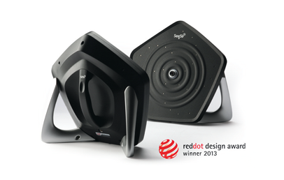
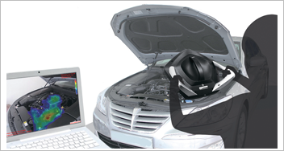
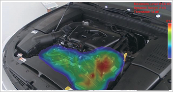

Report by Subjects
Report by Subjects
KAIST RESEARCH ACHIEVEMENTS
World's first
Handheld Sound Camera
(Department of Industrial Design) Seok-Hyung Bae
Summary
In the midst of the Pacific Ocean, sailor A finds a strange noise coming from the engine room of his deep-sea fishing vessel. However, he cannot figure out what the exact sound or problem is. Sailor A decides to use a handheld sound camera to capture a noise video and to send it to an expert on land. An expert analyzes the video and explains the problem and its solution to sailor A. Sailor A can fix the part and keep sailing smoothly. The handheld sound camera is widely used for industrial applications, as in the example of Sailor A, but is also useful for applications at home to capture noises through the floor and to examine private automobile engines.
R&D Report

BSR (Buzz, Squeak & Rattle) noises from industrial products may imply design faults, abrasion of components, or other problems. However, it is not easy to spot the noise source with bare eyes and ears. A sound camera can be useful in this situation. However, existing models were large and heavy, and thus could only be used on tripods. Installation was complicated, and exploration of upper/lower surfaces or narrow spaces was difficult.
High Portability
The new sound camera reduced its size by 60% and weight by 70% compared to its previous model, yet it can still sufficiently measure target noises with a frequency range of 350 Hz to 12 kHz. Users can freely move the camera around to locate noise sources in various areas, including the insides of machines and cars.
Real-time Measurement
and Visualization
Five spiral arrays of high-sensitivity digital microphones and a high-resolution optical camera superpose sound images onto visual images in realtime (at 25 frames per second), enabling intuitive visualization and recording (in .avi or .wav format) of the sound data.
All-in-one Body
A simplified preparation process makes our new sound camera easy to use. The previous model required users to assemble microphone modules and connect them to a controller and computer with multiple cables. However, in the new model, all of the sensors are mounted inside the main body and the cables are unified. This also makes storage and transportation easier. Designed as a single solid body without moving parts, the camera is also durable.
Excellent Usability
The ergonomically designed central handle at the back of the camera enables a stable one-hand grip, allowing the user to control the noise source or computer with the other hand. Two side handles enable the user to comfortably hold the camera in many different ways, also providing a steady stand at the same time.
Commercialization and Award
The newly designed sound camera was successfully commercialized by SM Instruments, Inc., a venture company started in the KAIST Technology Business Incubation Center. The camera, under its brand name SeeSV-S205, is now in actual use in the product development processes of many companies, including Hyundai Motors, Kia Motors, SsangYong Motors, LG Electronics, and Samsung Electronics. For its innovative design, SeeSV-S205 won a Red Dot Design Award: Product Design, one of the three most prestigious international design awards in the world.
 Fig 2. Identifying the location of target noises by using SeeSV-S205, a portable sound camera.
 Fig 3. Images of car noises measured by SeeSV-S205.
Expectation Effectiveness
This new handheld sound camera allows easy and early detection of noise and vibration problems in the new product development process; it is expected to greatly improve the emotional quality of new products. The outstanding design outcome results from a thorough understanding of advanced technology by the Department of Industrial Design at KAIST. This contributes to the growth of this venture company into a global leader in the field of noise and vibration measurement, an excellent example of the creative economy.
Research Funding
ㆍThis study is a joint research project between the Department of Industrial Design at KAIST and SM Instruments, Inc.
Research Results
ㆍInternational design award: Red Dot Design Award: Product Design, one of the three most prestigious design competitions in the world
ㆍDesign applications: 2 domestic patent applications
ㆍExhibitions: Automotive Testing Expo 2013 North America, one of the largest exhibitions for automotive testing equipment in the world, as well as others
ㆍDomestic press coverage: KBS TV (Nationwide 2013.4.5.), YTN TV (Daejeon 2013.4.5.), The Electronics Times (2013. 4.4.), and others
ㆍ International press coverage: Popular Science (US 2013. 5.9.), Wired (US 2013.5.10.), and others